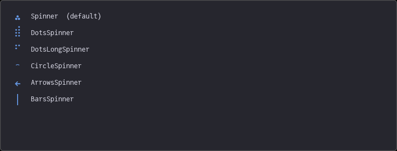
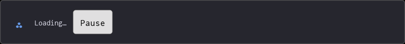
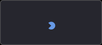

Spinner
The Spinner component displays an animated Unicode symbol that cycles through a sequence of characters, useful for indicating loading or processing states.
State is managed externally via an immutable SpinnerState and an on_state_change callback, following the same pattern as other interactive Fugl components.
Built-in Symbol Sets
Fugl ships with several predefined symbol sequences. Each has a convenience constructor.
using Fugl
using Fugl: Text
s1 = Ref(SpinnerState())
s2 = Ref(SpinnerState())
s3 = Ref(SpinnerState())
s4 = Ref(SpinnerState())
s5 = Ref(SpinnerState())
s6 = Ref(SpinnerState())
label_style = TextStyle(size_points = 14, color = Vec4f(0.85, 0.85, 0.9, 1.0))
spinner_style = TextStyle(size_points = 20, color = Vec4f(0.4, 0.6, 0.9, 1.0))
function MyApp()
Container(
IntrinsicColumn([
IntrinsicRow([
FixedWidth(Spinner(state = s1[], on_state_change = ns -> s1[] = ns, text_style = spinner_style), 32.0f0),
Text("Spinner (default)", style = label_style)
], spacing = 10.0f0),
IntrinsicRow([
FixedWidth(DotsSpinner(state = s2[], on_state_change = ns -> s2[] = ns, text_style = spinner_style), 32.0f0),
Text("DotsSpinner", style = label_style)
], spacing = 10.0f0),
IntrinsicRow([
FixedWidth(DotsLongSpinner(state = s3[], on_state_change = ns -> s3[] = ns, text_style = spinner_style), 32.0f0),
Text("DotsLongSpinner", style = label_style)
], spacing = 10.0f0),
IntrinsicRow([
FixedWidth(CircleSpinner(state = s4[], on_state_change = ns -> s4[] = ns, text_style = spinner_style), 32.0f0),
Text("CircleSpinner", style = label_style)
], spacing = 10.0f0),
IntrinsicRow([
FixedWidth(ArrowsSpinner(state = s5[], on_state_change = ns -> s5[] = ns, text_style = spinner_style), 32.0f0),
Text("ArrowsSpinner", style = label_style)
], spacing = 10.0f0),
IntrinsicRow([
FixedWidth(BarsSpinner(state = s6[], on_state_change = ns -> s6[] = ns, text_style = spinner_style), 32.0f0),
Text("BarsSpinner", style = label_style)
], spacing = 10.0f0),
], spacing = 12.0f0),
style = ContainerStyle(
background_color = Vec4f(0.15, 0.15, 0.18, 1.0),
padding = 20.0f0
)
)
end
screenshot(MyApp, "spinner_types.png", 812, 310);
Controlling a Spinner
The is_spinning field on SpinnerState pauses or resumes animation. Toggle it by constructing a new state and propagating it via the callback.
using Fugl
using Fugl: Text
spinner_state = Ref(SpinnerState())
btn_state = Ref(InteractionState())
spinner_style = TextStyle(size_points = 24, color = Vec4f(0.4, 0.6, 0.9, 1.0))
label_style = TextStyle(size_points = 14, color = Vec4f(0.85, 0.85, 0.9, 1.0))
function MyApp()
Container(
IntrinsicRow([
FixedWidth(
Spinner(
state = spinner_state[],
interval_seconds = 0.1,
text_style = spinner_style,
on_state_change = (ns) -> spinner_state[] = ns
),
36.0f0
),
Text("Loading…", style = label_style),
FixedWidth(
TextButton(
spinner_state[].is_spinning ? "Pause" : "Resume",
on_click = () -> begin
cs = spinner_state[]
spinner_state[] = SpinnerState(cs.current_index, cs.last_update_time, !cs.is_spinning)
end,
interaction_state = btn_state[],
on_interaction_state_change = (ns) -> btn_state[] = ns
),
80.0f0
)
], spacing = 12.0f0),
style = ContainerStyle(
background_color = Vec4f(0.15, 0.15, 0.18, 1.0),
padding = 20.0f0
)
)
end
screenshot(MyApp, "spinner_control.png", 812, 90);
Custom Symbol Sequence
Pass any Vector{Char} to use a completely custom animation sequence.
using Fugl
pacman_symbols = ['', '', '', '']
spinner_state = Ref(SpinnerState())
spinner_style = TextStyle(size_points = 28, color = Vec4f(0.4, 0.6, 0.9, 1.0))
function MyApp()
Container(
Spinner(
pacman_symbols,
state = spinner_state[],
interval_seconds = 0.08,
text_style = spinner_style,
on_state_change = (ns) -> spinner_state[] = ns
),
style = ContainerStyle(
background_color = Vec4f(0.15, 0.15, 0.18, 1.0),
padding = 20.0f0
)
)
end
screenshot(MyApp, "spinner_custom.png", 200, 90);